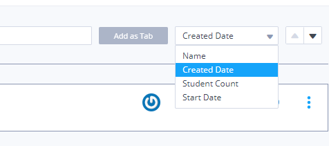
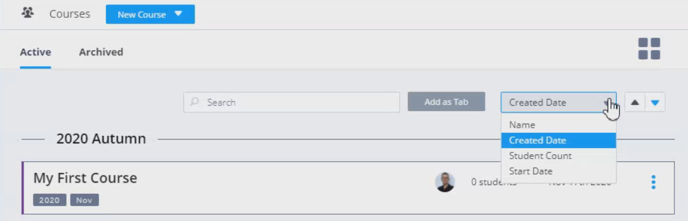

Search and Order Courses¶
Courses are displayed in groups based on their creation date. The most recent course is displayed first. Courses are grouped as follows:
Sep-Dec - Autumn
Jan-May - Spring
Jun-Aug - Summer
Note
The season dividers can be turned off for the organization if required. See Set Users Dashboard
My and All tabs¶
The My tab will show all courses in which you are a Teacher. This can be useful where you are in the Owners group and do not wish to see all the courses in the organization.
If you wish to see all the courses in the organization go to the All tab.
Sort courses¶
You can sort the courses within the group by Name, Created Date, Student Count, or Start Date.

Search course¶
If you have a large number of courses, you can search by Name, Created Date, Student Count, or Start Date. Choose the sort option and then simply start typing your search criteria in the Search box. Codio searches all course names and filters your list accordingly.

You can use this feature to more easily view just courses you teach. Search for your username and Add as Tab as described below.
Add as Tab¶
To save your search parameters as a tab, click Add as Tab. Your search is then saved as a tab so you can quickly perform the same search again.